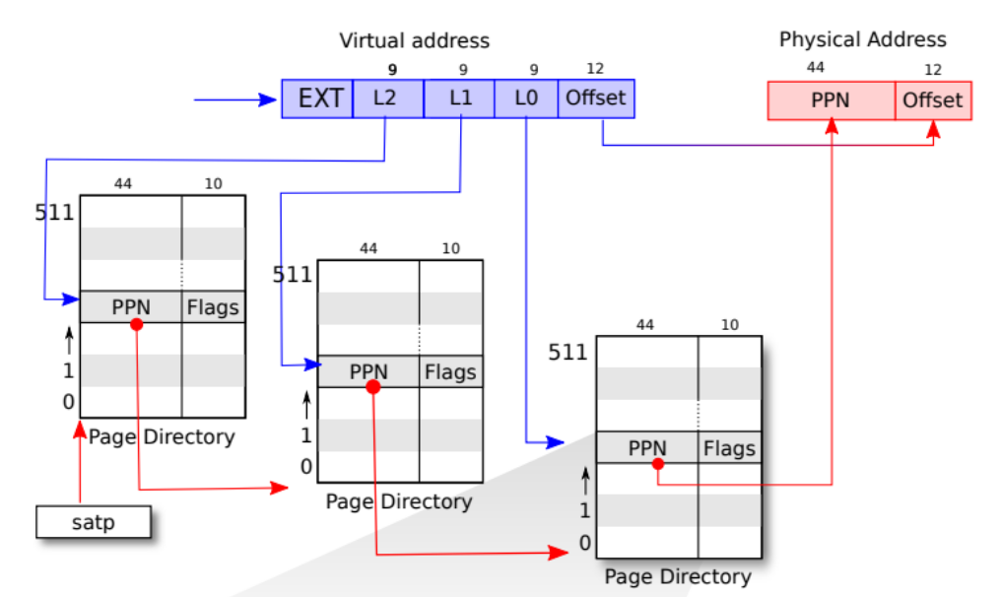
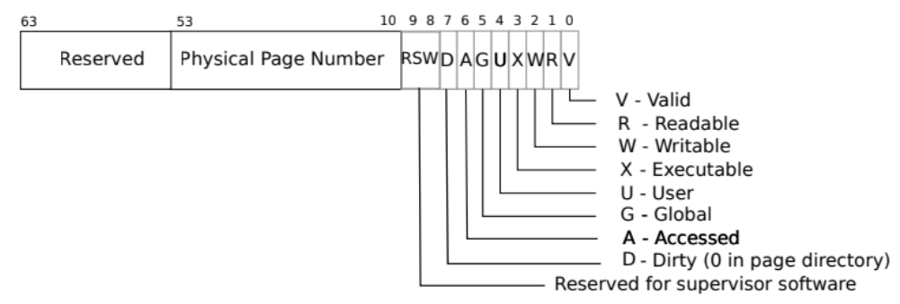

MIT 6.S081 复习
本文最后更新于：2024年10月27日 下午
操作系统接口
进程和内存
当我们在shell中运行某个指令时，shell通常会创建一个新的进程来执行，即fork一个子进程，然后在子进程中调用
exec来执行指令
fork调用
进程可以使用fork复制创建一个新进程，其内存内容与父进程完全一致（严格来说，父进程只是C程序被编译之后存在内存中的指令，因此是可以被100%复制的）
fork函数在父进程中返回子进程的PID，在子进程中返回0
1 | |
在fork函数执行时，父子进程的内存内容完全相同，但由于身份的不同后续可能执行不同的代码
exec调用
使用exec从文件系统中找到指定的可执行文件，将当前进程的内存内容替换为新的可执行文件的内容
exec通常不会返回，毕竟exec会完全替换当前进程的内存，除非执行错误（比如找不到该文件）
1 | |
I/O和文件描述符
文件描述符（file descriptor）是一个小整数，用于表示进程可以读或写的对象，如文件、目录、设备、管道等。这种方式将文件、管道、设备之间的差异抽象出来，使他们看起来都像字节流
xv6内核使用文件描述符作为每个进程表的索引。每个进程都有一个从0开始的文件描述符表，每个表项指向一个“文件”，按照惯例，进程的文件描述符0，1，2分别指向标准输入、标准输出和标准错误
下面是一个进程使用系统调用read和write将数据从标准输入复制到标准输出的过程，如果失败，将错误信息写到标准错误：
1 | |
这其实也是一个简单的cat程序，从标准输入读取数据，然后写到标准输出
系统调用close会释放一个fd，使其可被重用。在新分配fd时，总会分配当前进程中标号最小的未使用描述符
fork恢复至父进程的文件描述符表和内存，因此父子进程在开始拥有完全相同的打开文件。下面时利用fork进行I/O重定向的例子：
1 | |
需要注意的是，fork虽然会复制文件描述符表，并且这个表在之后不会共享，但是每个基础文件偏移量是共享的：
1 | |
这段代码会输出hello world，因为子进程和父进程共享文件偏移量，所以子进程写完hello之后，标准输出（视为基础文件）的文件偏移量也会被移动到hello之后，所以父进程接着写world，而不是从头开始写
文件偏移量与文件描述符绑定，而不是文件本身
dup 系统调用会复制一个现有的文件描述符，返回一个新的文件描述符，指向同一个文件。和fork一样，dup出来的fd也和原来的fd共享偏移量（可以理解成引用）
1 | |
管道
管道是一对用于读和写的缓冲区，用于进程间通信。
如果没有可用数据，对于管道读操作会进入等待，直到有新数据写入，或者所有指向管道写的fd都被关闭
1 | |
操作系统架构——xv6
操作系统必须满足的是三个要求：多路复用、隔离、交互
编译和运行
源代码
xv6大致分为三个文件夹：kernel —— 内核代码，user —— 用户程序代码，以及 mkfs，用于创建一个空的文件镜像
QEMU相当于一个RISC-V的硬件模拟器，主循环只做一件事：读取RISC-V指令，并解析执行
启动过程
在连接上QEMU的gdb server后，可以通过调试器观察到，QEMU首先从0x80000000开始，运行各类init函数初始化xv6系统的各个组件，最后执行userinit函数，启动第一个用户进程，也就是shell
抽象系统资源
操作系统需要协调多个应用程序的运行，比起每个应用程序直接操作硬件的同时还需要互相协调硬件使用时间，操作系统提供了一种抽象的硬件接口，将资源抽象为服务，实现不同应用之间的隔离
系统权限分层
RISC-V为CPU提供了三种CPU执行指令的模式：机器模式、管理模式（管态）、用户模式（目态）
CPU在机器模式下启动，执行少量代码完成初始化配置，然后切换管态，将控制权交给操作系统。操作系统在管态下运行，可以访问所有硬件资源，包括内存、I/O设备、时钟等。用户程序在目态下运行，只能访问有限的硬件资源，不能直接访问内存、I/O设备等，必须通过系统调用来访问
内核组织
一个关键问题是判断操作系统的哪些部分需要在管态运行，哪些部分需要在目态运行。
宏内核：整个操作系统都驻留在内核，所有系统调用的实现都以管态运行
缺点在于，OS不同部分的接口通常很复杂，内核难以维护，同时出错可能性较大
微内核：只有少量的核心功能驻留在内核，其他功能以用户态进程的形式运行。
比如说，微内核的文件系统作为用户级进程运行（被称为server），进程通过消息传递内核转发来调用文件系统服务。这样做的好处是，内核的代码量减少，内核更加稳定，同时用户态进程的代码可以更容易地被替换、升级，但坏处是一次交互可能需要多次目态/管态的跳转，影响性能；同时，将os的功能隔离开将更难实现内存共享
和大多数类Unix一样，xv6使用宏内核设计，尽管他的内核比很多微内核还要小
xv6进程概述
xv6以进程为单位做隔离。这种抽象可以防止进程破坏或监视其他进程，或者破坏内核。
xv6使用由硬件实现的页表来为每个进程提供自己的地址空间，这样每个进程都有自己的专用空间。虚拟地址将每个进程所使用的空间与其他进程隔离开来。
页表
页表是OS为每个进程提供私有地址空间和内存的机制。指令使用虚拟地址，机器RAM使用物理地址，RISC-V页表硬件负责将虚拟地址映射为物理地址。
分页硬件
将虚拟地址映射到物理地址的硬件。每个进程都有一个自己的页表，并存储在物理内存中，这个页表的物理地址由内核保存。
当某个进程上CPU后，某个名为SATP的寄存器会装入该进程的根页表页的物理地址。随后内存管理单元（MMU）根据地址找到该进程的页表，开始该进程虚拟内存到物理内存的映射
xv6基于Sv39 RISC-V，只使用64位虚拟地址中的低39位。页表硬件利用这39位找到一个56位的物理地址

页表在逻辑上是一个由 个页表条目（Page Table Entries）组成的数组，每个页表条目对应一个 大小的页框，每个PTE包含一个44位的物理页号（Physical Page Number）和一些标志位，如可读、可写、可执行等
实际上，xv6使用了多级页表机制，这种三级结构可以更加节省内存的记录PTE（虚拟页表不会一开始就有PTE，都是需要物理地址了就分配一个页表项来映射）。优点：节省内存，更容易管理大地址空间；缺点：内存访问开销增大
在上述系统中，虚拟内存空间大小为39位，而物理内存空间大小为56位，但并不是说物理内存空间一定会大于虚拟内存空间

每个PTE都包含10bit大小的标志位
内核地址空间
xv6为每个进程维护一个页表，用来描述每个进程的用户地址空间，此外，还需要维护一个单独描述内核地址空间的页表。这一页表描述了整个内核空间的地址，并将其映射到物理内存，在CPU进入内核态执行系统调用、中断处理等时会用到。
内核配置其地址空间的布局，以允许自己用虚拟地址访问物理内存和各种硬件资源
这一部分结构大多由硬件设计者决定，当主板上电之后，主板做的第一件事就是运行存储在0x1000，即boot ROM中的代码，随后会从地址0x8000000000开始运行，启动操作系统。设计者规定，当完成了虚拟到物理地址的映射后，不同的地址代表不同的设备和组件，其中，KERNBASE（0x80000000）到PHYSTOP（0x86400000）被映射到DDR，也就是物理内存。
可以发现，对于物理内存来说，虚拟内存与物理内存是直接映射关系。（感觉这个箭头方向有些歧义，应该是在内核的物理地址是80000000的基础上，为了方便，所以将虚拟内存的内核地址也设为80000000）
注意上图中有一部分page在虚拟内存的位置很靠后，如kernel stack，此外，两个Kstack后面都跟随了一个未被映射到物理内存的Guard Page，这是一种保护机制：为了防止栈溢出，Guard Page的PTE中，其flags中的valid标志位会保持为空，这样当发生栈溢出时，MMU在访问溢出地址的PTE时会发现其valid位为空，从而触发异常，内核可以处理这个异常，而不是让程序继续执行。这样设置的同时还节省了物理内存（因为guard page并没有实际的物理内存）
kernel stack在Kernel data中被重复映射了一次，在实际使用Kstack时还是使用上面的这部分地址，因为有Guard page更加安全
进程地址空间
每个进程的地址空间从0开始，由低到高依次是：
- 用户代码和数据区
- 栈区：函数调用和局部变量
- 堆区：动态内存分配，例如进程运行时请求的内存（malloc）
- Trapframe：用于保存进程上下文。当发生trap时，CPU将当前CPU状态保存到正在处理的进程的trapframe中，并处理trap，处理完后再从trapframe中恢复
- Trampoline：一小段代码，用于在trap发生时将CPU切换到内核页表；并在处理完内核态事件后，将CPU切换回用户页表
kvminit
在源码中，xv6启动时main会调用到名为kvminit的函数（kernel/vm.c:1），用于设置kernel的地址空间，即完成上图中PLIC、CLINT、kernel等空间的虚拟-物理映射。
kvminithart
在kvminit执行完毕后，main会调用kvminithart来安装内核页表，将根页表页的物理地址写入SATP寄存器，在这之后CPU就可以正常使用虚拟内存。
这条代码是CPU进行地址翻译的分水岭，之后CPU就会使用虚拟地址，而不再直接使用物理地址
walk
页表中最核心的两个函数是walk和mappages，walk函数用于根据虚拟地址找到对应的PTE，mappages函数用于将虚拟地址映射到物理地址
walk模拟页表硬件，根据虚拟地址一级一级找到对应PTE，直到最终的物理地址
陷阱和系统调用
有三类事件会导致CPU搁置当前普通指令的执行，并将控制权转移给处理该事件的特殊代码：
- 系统调用：用户程序执行
ecall来要求内核执行某行动时 - 异常：指令（用户或内核都可能）做了一些非法的事情
- 设备中断：某设备向系统发出某种信号，表明它需要被处理
这三类被统称为trap，通常情况下，我们希望trap是透明的，正在cpu的代码只需要稍后恢复，而意识不到发生了任何特殊的事情，一般来说，处理顺序为：
trap强制将cpu控制权转移到内核–>内核保存寄存器和其他状态，以便稍后恢复–>内核执行适当的trap处理程序–>内核恢复之前保存的状态
xv6的陷入机制
用一组控制寄存器明确陷阱以及如何处理：
- stvec：存储陷阱处理程序的地址。
- sepc：保存陷阱前的pc值，因为之后pc会被stevc覆盖，处理完陷阱后sret指令会将sepc赋给pc，回复之前的cpu任务
- scause：保存描述陷阱的数字
- sscratch：用于保存内核的一些状态，比如页表的物理地址
- sstatus：保存cpu的状态，比如SIE位——是否启动设备中断，SPP位——陷阱来自用户态还是内核态
执行陷阱的步骤：
- 检查陷阱如果是设备中断，但SIE位为0，则忽略
- 将SIE置0，防止在处理陷阱时发生新的陷阱
- 将pc保存到sepc，当前cpu模式保存到SPP位，并设置scause
- cpu进入内核态，并将stvec赋给pc，开始执行中断处理程序
从用户态陷入
如果用户程序请求系统调用，或者发生异常，或者设备中断，CPU将在进程的虚拟内存空间中发生trap。注意，在cpu处理用户进程也就是用户态时，stvec中存储的是用户空间中trampoline中uservec的地址。这样在遭遇trap时，CPU会先跳转到uservec，进行用户进程的相应处理。
在用户空间的Trampoline中，包含一段称为uservec的代码，uservec将此时cpu上下文（也就是寄存器的值）保存到trampframe中，再将satp切换到内核页表，并调用usertrap函数
usertrap会首先改变stvec，这样陷阱会跳转给内核空间的kernelvec也就是内核trap处理程序
从内核态陷入
在CPU内核态发生trap时，stvec是直接指向的kernelvec。kernelvec在保存好寄存器后会跳转到kerneltrap
中断和设备
驱动
LAB
lab1
启动xv6
sleep
用C的sleep函数实现一个简单的休眠调用没什么好说的
pingpong
创建两个管道c2p和p2c，fork一下，之后父进程向子进程ping一个字节，完事子进程再向父进程pong一个字节
fork之后，注意子进程这边要先关c2p的读端和p2c的写端。之后从p2c管道读，在写进c2p管道；父进程同理
prime
利用fork筛选素数，首先创建一个管道，往其中写入2-35的整数，开始创建子进程，子进程运行primes函数，父进程等待子进程结束
对于primes函数，首先会从左管道读一个数first并打印，建立一个管道（右管道），再将左管道中的所有不能被first整除的数写入右管道。接着fork一下，继续处理右管道
find
在指定的目录里面递归的寻找某个文件名。递归遍历，如果子项是目录就递归进入，不是就判断文件名